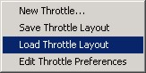
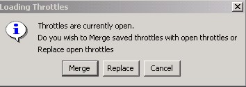
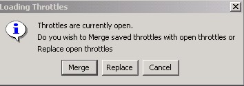

The previous chapters presented all of the information needed to...
- open up a new throttle window,
- establish an active decoder address,
- run a locomotive,
- activate any functions of the locomotive,
- and set up a customized configuration.
This chapter now provides information on saving and opening throttle layouts.
Saving a Throttle Layout
A new throttle window can be started and a DCC address established to run a train around a layout, and then close down the throttle window when done with it. This of course loses the configuration that you established during this throttle session. And this is fine if you are running a test of sorts on a loco that you have no intention of running by one of these computer throttles. Therefore, closing down the throttle window to eliminate it would suffice.
|
But what if you don't want to keep establishing a new throttle window each time for one or more locomotives that you intend on running from your computer? If you were following along in the previous chapters with building up a new throttle layout and got your train moving, then the next question that probably comes to your mind is, "how do I save it?" Following the directions provided in Chapter 1 for locating the Throttle Menu, locate the option that says "Save Throttle Layout" (see figure 4-1 on the right). Clicking on this menu option will display a "Save As" dialog box see figure 4-2 on the right). By default, it should show the directory where your roster file is located. You can save it to this directory if you wish, or you can save it to another location of your choosing. For example, the figure on the right shows a "Throttles" folder (sub-directory) where all throttle layout files are saved. After entering a file name of your choosing (and optional location) that best supports your railroad environment, the current throttle layout will be saved with all preferences — including window size and location. After the save is successful, you can close down the throttle window.
Note: the "Save" option will save all currently
opened throttle windows — they are not
saved as individual throttles. This is explained in more detail
below.
|
|
 Figure 4-1: Save Throttle Layout  Figure 4-2: Save As Dialog |
Saving Multiple Throttle Windows
The above instructions are pretty simple when working with a single throttle window.
But what happens when you have two or more throttle windows open at the same time? When you use the save option, all opened throttle windows will be saved in the same file. When that file is re-opened, all throttle windows identified in that file will get opened.
This is important to understand — especially further along when working with merging multiple throttles.
|
In the previous chapter, a single throttle window was initiated. And a simple "save" would certainly have saved just the single throttle window into a single layout file. When the file is opened again, only the single throttle window would appear. But what if we had opened and configured a second throttle window, while the first throttle window was still active on the screen? There would then be two active throttle windows that would be "saved" into the same layout file (see figure 4-3). Not only would the configuration of the throttles be saved, but also the exact screen sizing and locations of the two throttles. When the layout file is re-opened, both throttle windows would be opened and positioned on the computer screen in the exact place they were when the file was saved. |
|
 Figure 4-3: Two Active Throttle Windows |
Open/Load a Throttle Layout
After saving a throttle layout has been accomplished, you'll want to open the file again. This is a very simple procedure. However, opening up a throttle layout file when one or more throttle windows are already active somewhere on the screen, requires an extra step. Before we discuss this extra step, let's first open a simple throttle layout file.
If you were following the guidelines shown above for saving a throttle layout file, you should now have created your first throttle file. If you haven't done so already, close down the throttle window that you created in the previous chapter (make sure you saved it first by following the above instructions).
|
You shouldn't have any throttle windows open on your screen at this time. Following the directions provided in Chapter 1 for locating the Throttle Menu, locate the option that says "Load Throttle Layout" (see figure 4-4 on the right). Clicking on this menu option will display an "Open" dialog box. Locate the throttle layout file that you just previously saved and open it. |
|
 Figure 4-4: Load Throttle Layout |
The throttle window that you just created should open up in the same place where you closed it. At the same time that the window opens, it is also initializing the decoder address to the command station (just like when the address was first "Set"). The throttle attempts to determine the current direction of the locomotive, as well as identify any functions that are in the "on" state.
Enhancement requests are already on the list for the throttles to be "smart" in determining when another throttle already has the address. But until these throttles are fully implemented, just beware that there may be quirks with your particular DCC system with this feature. It is therefore suggested that prior to opening up a saved throttle layout file, the DCC address is verified as not being used by another throttle somewhere.
Merging Throttle Windows
Throttle layout files can consist of a single throttle window (to control a single
locomotive or consist address), or it can contain multiple throttle windows (refer to
figure 4-3). In either case, when opening a throttle layout file, the program will check
to see if any existing active throttle windows are already open. If none are found,
then the file is opened just like a simple layout opening (explained above).
However, when one or more throttle windows are discovered already open on
the screen, the program will open up a dialog box as shown in figure 4-5
on the right.
- Merge — leaves the currently active open throttle
windows in place and opens the throttle(s) contained in the layout file
being opened.
- Replace — closes down the currently active open
throttle window(s) and opens up the throttle window(s) established in the
saved layout file.
- Cancel — cancels the "open" request and closes
down this dialog window.


Figure 4-5: Merge Dialog Box
Note: Do not confuse the action that is occurring here with any attempts to overwrite your saved
throttle layout files. The above actions have no effect on the actual saved throttle layout
files themselves. The only "merging" and "replacing" that occurs is simply
on your screen.
TIP!
When creating throttle layout files, you can save the same decoder address
in multiple throttle layout files. A good example of why you may want to do this
would be if you create several throttle layout files,
each consisting of a single throttle window controlling one single locomotive —
like one for each loco in your roster. There may
be times when you wish to just run a single locomotive and you just open up the associated layout file.
Simple! But what if you find yourself opening up the same locomotive throttles consistently on each session.
It's going to become a pain opening up (and "merging") these throttles one at a time.
Therefore, you could create another layout file that contains all of the throttle windows
that you wish; then just open up the one layout file and you'll
have all of the throttle windows defined.
Just remember, when making a change to the configuration
of a throttle window, it only gets changed in the layout file that you saved — it is not
a global change in every file where that locomotive is used.
Throttle layout files can consist of a single throttle window (to control a single locomotive or consist address), or it can contain multiple throttle windows (refer to figure 4-3). In either case, when opening a throttle layout file, the program will check to see if any existing active throttle windows are already open. If none are found, then the file is opened just like a simple layout opening (explained above).
|
However, when one or more throttle windows are discovered already open on the screen, the program will open up a dialog box as shown in figure 4-5 on the right.
|
|
 Figure 4-5: Merge Dialog Box |
|
When creating throttle layout files, you can save the same decoder address in multiple throttle layout files. A good example of why you may want to do this would be if you create several throttle layout files, each consisting of a single throttle window controlling one single locomotive — like one for each loco in your roster. There may be times when you wish to just run a single locomotive and you just open up the associated layout file. Simple! But what if you find yourself opening up the same locomotive throttles consistently on each session. It's going to become a pain opening up (and "merging") these throttles one at a time. Therefore, you could create another layout file that contains all of the throttle windows that you wish; then just open up the one layout file and you'll have all of the throttle windows defined. Just remember, when making a change to the configuration of a throttle window, it only gets changed in the layout file that you saved — it is not a global change in every file where that locomotive is used. |
Closing a Throttle Window
When done with a throttle window, it might be a good idea if you get into the practice of either "releasing" or "dispatching" the locomotive before completely closing down the throttle window.
If you have made any configuration changes to the throttle window, and you want to save them, you'll need to follow the steps as outlined above.
When you are ready, simply close down the throttle window as you normally would on whatever computer system you use. For example, for Microsoft Windows, simply click on the "X" in the upper right corner of the throttle window.